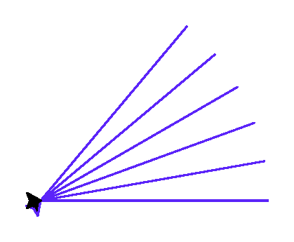
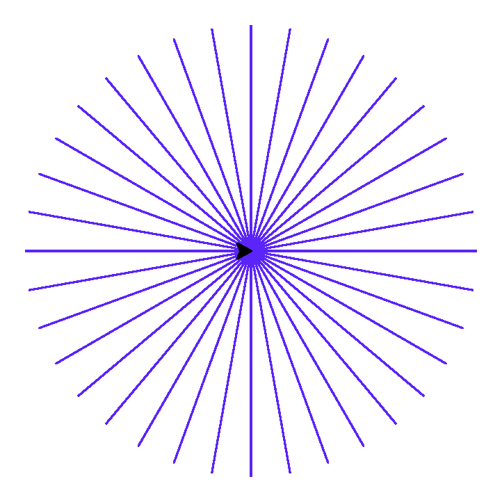

Мини-проект — рисуем мандалу только из прямых линий
Собираем все приёмы главы в одном узоре — от первого мотива до полного результата — и подводим итоги.
Соберём все приёмы главы в одном финальном узоре: мандале, составленной только из прямых линий, — множество лучей одинаковой длины, каждый раз повёрнутых на небольшой угол.
Планирование: что вообще происходит
Идея простая: встать в одну точку, посмотреть в направлении ugol,
проехать вперёд и сразу же вернуться назад по той же линии — а затем немного повернуть курс и
повторить. Если повторить это достаточно много раз, покрывая все 360° вокруг центра, лучи
сольются в симметричный узор.
Один мотив
Сначала — всего несколько лучей, чтобы увидеть сам приём до того, как он превратится в насыщенный узор:
import turtle
screen = turtle.Screen()
screen.setup(width=420, height=420)
artist = turtle.Turtle()
artist.speed(0)
artist.pencolor("#5B24F9")
shag_ugla = 10
ugol = 0
while ugol < 60:
artist.setheading(ugol)
artist.forward(150)
artist.backward(150)
ugol += shag_ugla
screen.exitonclick()
shag_ugla = 10
ugol = 0
while ugol < 60:
artist.setheading(ugol)
artist.forward(150)
artist.backward(150)
ugol += shag_uglawhile подробно разберём позже — здесь достаточно увидеть, что setheading() позволяет нарисовать сложный узор всего в нескольких строках, перебирая углы по кругу.Полный оборот — готовая мандала
Тот же код, только цикл теперь идёт не до 60°, а до полных 360°:
import turtle
screen = turtle.Screen()
screen.setup(width=420, height=420)
artist = turtle.Turtle()
artist.speed(0)
artist.pencolor("#5B24F9")
shag_ugla = 10
ugol = 0
while ugol < 360:
artist.setheading(ugol)
artist.forward(150)
artist.backward(150)
ugol += shag_ugla
screen.exitonclick()
shag_ugla = 10
ugol = 0
while ugol < 360:
artist.setheading(ugol)
artist.forward(150)
artist.backward(150)
ugol += shag_uglaИзмените shag_ugla на 5 или на 30 — как меняется узор?
Измените длину forward(150) — попробуйте 80 и 250.
Добавьте artist.pencolor("violet") перед циклом и поэкспериментируйте с другими цветами.
Финальная карта главы
Итоги
Что мы узнали в этой главе
- Экран (
turtle.Screen()) и черепашка (turtle.Turtle()) — два разных объекта; у черепашки есть состояние: позиция, курс, перо, цвет. - Окно Turtle использует ту же координатную систему, что и математика: центр (0, 0), x вправо, y вверх.
forward()/backward()двигают черепашку;left()/right()поворачивают курс относительно текущего направления;setheading()задаёт направление абсолютно.- Угол поворота для правильного многоугольника —
360 / n. penup()/pendown()управляют тем, рисуется ли линия при движении;goto(x, y)перемещает черепашку в конкретную точку экрана напрямую.begin_fill()/end_fill()закрашивают замкнутый контур;circle()рисует окружности и дуги;dot()ставит точку без движения.- random.seed() делает случайную графику воспроизводимой — полезно и для документации, и для отладки.
Что дальше
В главе 7 мы вернёмся к Turtle и настроим её ещё тоньше — научимся точно настраивать экран, рисовать текст, освоим дуги подробнее и соберём собственного смайлика. Всё, что вы узнали здесь — координаты, углы, перо, заливка, — станет тем фундаментом, на котором строится более тонкая настройка.